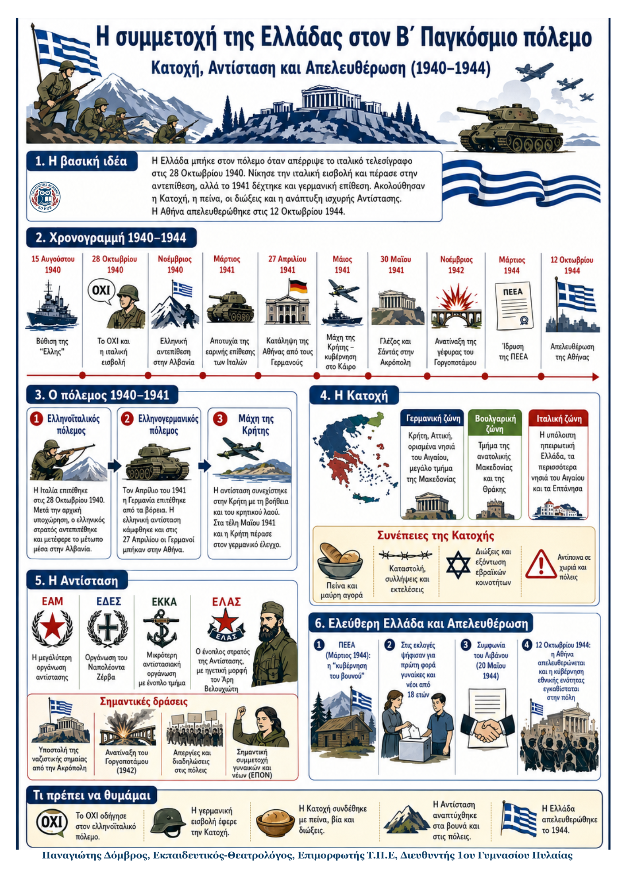

Δεν βρέθηκε η λέξη ή η φράση μέσα στην ενότητα.
1Η βασική ιδέα
2Από τον πόλεμο στην Κατοχή
| 15 Αυγ. 1940 | 28 Οκτ. 1940 | Νοέμβρ. 1940–Μάρτ. 1941 | 6–27 Απρ. 1941 | Μάιος 1941 |
|---|---|---|---|---|
| Ιταλικό υποβρύχιο βυθίζει την «Έλλη» στην Τήνο. | Το ιταλικό τελεσίγραφο απορρίπτεται. Αρχίζει ο ελληνοϊταλικός πόλεμος. | Ελληνική αντεπίθεση και προέλαση μέσα στην Αλβανία. Η «εαρινή επίθεση» αποτυγχάνει. | Γερμανική εισβολή. Συνθηκολόγηση και κατάληψη της Αθήνας. | Η μάχη της Κρήτης λήγει. Η εξόριστη κυβέρνηση εγκαθίσταται στο Κάιρο. |
3Τα κύρια σημεία του πολέμου 1940–1941
Ο ελληνοϊταλικός πόλεμος • Η άρνηση του Μεταξά έμεινε στη συλλογική μνήμη ως «ΟΧΙ». • Μετά την αρχική υποχώρηση, ο ελληνικός στρατός πέρασε στην αντεπίθεση. • Καταλήφθηκαν η Κορυτσά, η Μοσχόπολη, το Πόγραδετς, το Αργυρόκαστρο και οι Άγιοι Σαράντα. • Ναυτικό και αεροπορία στήριξαν τις επιχειρήσεις και προστάτευσαν τις εφοδιοπομπές. |
Ο ελληνογερμανικός πόλεμος • Η Γερμανία επιτέθηκε από γιουγκοσλαβικό και βουλγαρικό έδαφος. • Η αντίσταση κάμφθηκε και ο Τσολάκογλου υπέγραψε συνθηκολόγηση. • Στις 27 Απριλίου 1941 οι Γερμανοί μπήκαν στην Αθήνα. • Η μάχη συνεχίστηκε στην Κρήτη, με σημαντική συμμετοχή του κρητικού λαού. |
|---|
4Κατοχή, Αντίσταση και Απελευθέρωση
Από την Κατοχή στην Απελευθέρωση
Κατοχή 1941–1944 Τρεις ζώνες κατοχής • δωσίλογη κυβέρνηση • καταστολή • πείνα • μαύρη αγορά • διώξεις Εβραίων |
Αντίσταση Ατομικές πράξεις • οργανώσεις • ένοπλος αγώνας • απεργίες • συλλαλητήρια • συμμετοχή γυναικών και νέων |
Απελευθέρωση Συμφωνία του Λιβάνου • κυβέρνηση εθνικής ενότητας • 12 Οκτωβρίου 1944: απελευθέρωση της Αθήνας |
|---|
5Τα κύρια σημεία
Η ζωή στην Κατοχή Η χώρα χωρίστηκε σε γερμανική, ιταλική και βουλγαρική ζώνη. Οι κατακτητές δέσμευσαν τους οικονομικούς πόρους, επέβαλαν λογοκρισία, συλλήψεις και εκτελέσεις. Η πείνα του χειμώνα 1941–1942 προκάλεσε χιλιάδες θανάτους, ιδιαίτερα στην Αθήνα. |
Οι οργανώσεις της Αντίστασης Το ΕΑΜ ήταν η μεγαλύτερη οργάνωση. Ο ΕΛΑΣ αποτέλεσε το ένοπλο τμήμα του. Έδρασαν επίσης ο ΕΔΕΣ και η ΕΚΚΑ. Τον Νοέμβριο του 1942 δυνάμεις του ΕΛΑΣ και του ΕΔΕΣ, μαζί με Βρετανούς, ανατίναξαν τη γέφυρα του Γοργοπόταμου. |
|---|---|
Αντίσταση στις πόλεις και στην ύπαιθρο Η αντίσταση πήρε πολλές μορφές: άρνηση συνεργασίας, απεργίες, διαδηλώσεις, σαμποτάζ και ένοπλο αγώνα. Σημαντική ήταν η συμμετοχή της νεολαίας, της ΕΠΟΝ και πολλών γυναικών. |
Αντίποινα και «ελεύθερη Ελλάδα» Οι κατακτητές απάντησαν με μαζικές εκτελέσεις και καταστροφές, όπως στα Καλάβρυτα και στην Κοκκινιά. Στις απελευθερωμένες περιοχές δημιουργήθηκαν λαϊκοί θεσμοί. Το 1944 ιδρύθηκε η ΠΕΕΑ και ψήφισαν για πρώτη φορά γυναίκες και νέοι από 18 ετών. |
6Ορισμοί – γλωσσάρι
| Δωσίλογοι: Έλληνες που συνεργάστηκαν με τις δυνάμεις κατοχής. | Μαύρη αγορά: Παράνομη πώληση αγαθών σε υπερβολικά υψηλές τιμές. |
|---|---|
| Αντίποινα: Βίαιες τιμωρίες αμάχων ως απάντηση σε πράξεις αντίστασης. | ΠΕΕΑ: Η «κυβέρνηση του βουνού», που διοίκησε απελευθερωμένες περιοχές το 1944. |
7Τι πρέπει να θυμάμαι
• Η ελληνική αντεπίθεση μετέφερε το μέτωπο μέσα στην Αλβανία.
• Η γερμανική εισβολή οδήγησε στην Κατοχή τον Απρίλιο–Μάιο του 1941.
• Η Κατοχή έφερε πείνα, διώξεις, οικονομική εκμετάλλευση και μαζικά αντίποινα.
• Η Αντίσταση εκφράστηκε με οργανώσεις, απεργίες, σαμποτάζ και ένοπλο αγώνα.
• Η Ελλάδα απελευθερώθηκε στις 12 Οκτωβρίου 1944.
